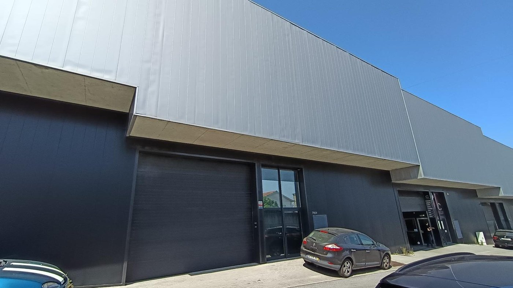

Uma família que caminha junta
Somos gente comum a descobrir que a fé muda o dia a dia. Conhece a nossa história, aquilo em que cremos e quem lidera a PIB Barcelos.
Começámos numa sala emprestada com doze pessoas. Hoje somos uma comunidade viva em Barcelos.
Em 2012, um pequeno grupo decidiu que a cidade precisava de uma igreja onde qualquer pessoa se sentisse em casa — sem máscaras, sem julgamentos, com uma mensagem real.
Catorze anos depois, continuamos com a mesma convicção: a fé não é um clube para quem já tem tudo resolvido, é um caminho para todos. E ninguém caminha sozinho.

Três coisas inegociáveis
Fé real
Uma mensagem que toca o quotidiano, não só o domingo. A Bíblia aplicada à vida como ela é.
Comunidade
Uma família onde ninguém caminha sozinho. Aqui somos conhecidos pelo nome.
Serviço
Amar a cidade com mãos e pés, não só palavras. Servir Barcelos é parte de quem somos.
A nossa linha do tempo
Os primeiros doze
Nasce a PIB Barcelos numa sala emprestada, com um grupo que sonhava com uma igreja para a cidade.
Casa própria
Mudamo-nos para o espaço no centro de Barcelos onde ainda hoje nos reunimos.
A família cresce
Novas famílias juntam-se à igreja e a comunidade fortalece-se.
Uma família de 480
Hoje somos uma família que continua a crescer em Barcelos.
Quem caminha à frente
Uma equipa que serve, não que manda. Estamos cá para ti.
Pr. José Roberto
Pastor